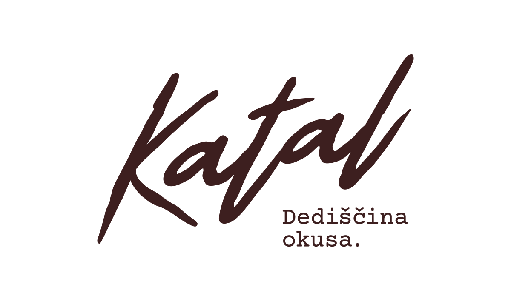
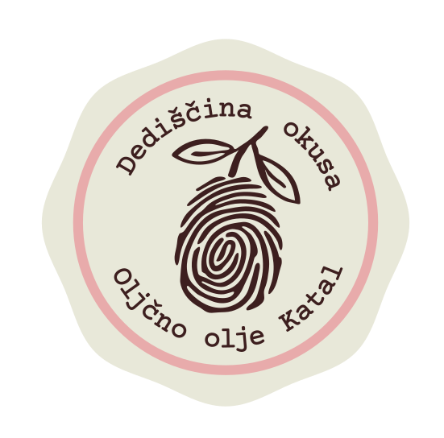
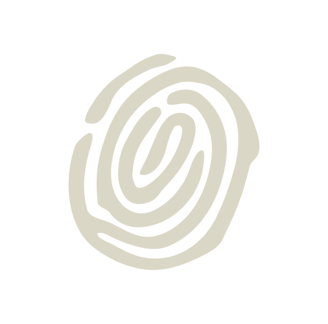

Na kruh.
Kos kruha, ščepec soli in olje. Prvi test, ki ga doma vedno naredimo.

Družina Katonar · Izola
Pri Katonarjevih za oljke skrbimo že več kot 50 let. Iz sončnih istrskih teras nastane olje s čistim, domačim in malo pikantnim značajem.

Fotografija izdelka kmalu: sem pride steklenica letošnjega olja na domači mizi ali med oljkami.
Letošnje olje
Najlepše ga je okusit čisto enostavno: kos dobrega kruha, malo soli in par kapelj olja. Potem pove vse samo.
Ko nam Alen pošlje podrobnosti, dodamo sorte, letnik, opis okusa, pakiranja, ceno in podatek o razpoložljivosti.

Fotografija kmalu
Sem pride prava fotografija Alena med oljkami, pri trgatvi ali doma v Izoli. Brez stock fotke, ker prava zgodba je boljša.
Naša zgodba
Oljke so pri Katonarjevih doma že več kot pol stoletja. Danes za nasade in olje skrbi Alen, z istim občutkom za zemljo, trgatev in dober okus, kot je bil doma vedno.
Ne delamo olja za vitrino. Delamo ga za mizo, za ljudi in za trenutke, ko želiš, da tudi čisto preprosta jed malo bolj zaživi.
Dopolnimo z Alenovo zgodbo: sem pride prava družinska letnica, stara fotografija ali njegov kratek stavek o oljkah.
Kako ga imamo radi
Par idej za vsak dan. Brez ceremonije, samo da je dobro.
Kos kruha, ščepec soli in olje. Prvi test, ki ga doma vedno naredimo.
Dodaj ga čisto na koncu, da ostane okus svež in izrazit.
Par kapelj pred serviranjem naredi ravno tisto razliko, ki jo potem vsi opazijo.
Kontakt
Za ceno, pakiranja, prevzem in razpoložljivost nam pošlji sporočilo. Odgovorimo osebno, brez avtomatov.
E-pošta: info@katal.si